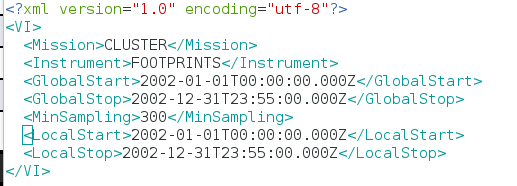
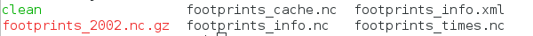
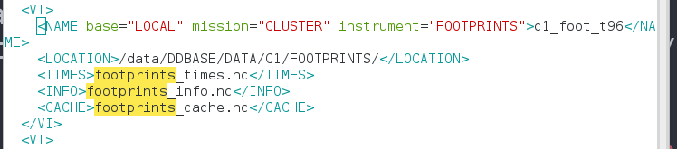
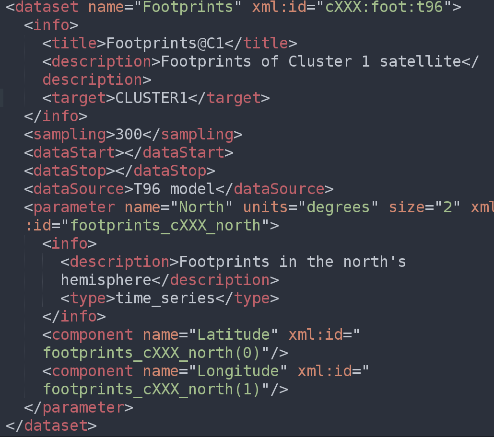
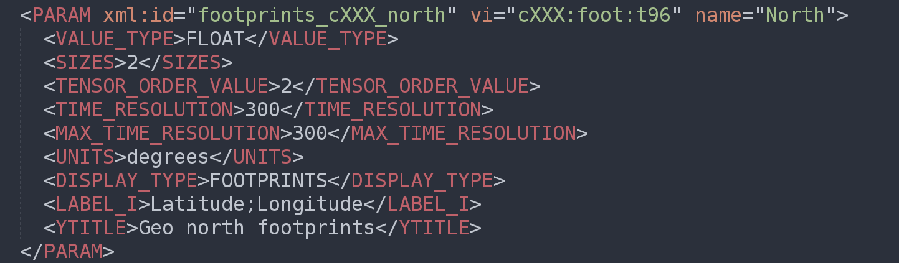

1 - Mise à jour de la base de données
1.1. Création d'un nouveau dossier
Tout d'abord, il faut créer un nouveau dossier qui contiendra les nouvelles données à rajouter dans la base de données.
mkdir new_dataset
Se placer dans ce nouveau dossier :
cd new_dataset
1.2. Insérer les données dans la base de données
Une fois que l'emplacement est créé, il faut rajouter les données à l'intérieur. Pour celà, on peut utiliser rsync, scp, etc ...
1.3. Création du fichier key_times.nc
Ensuite, il faut créer le fichier qui rescence tous les fichiers pésents dans ce dataset.
TimesUpdate -r key_times.nc key_[0-9]*.nc
Le nouveau fichier key_times.nc est alors créé et les fichiers sont également compressés.1.4. Création des fichiers key_info.xml et key_info.nc
Il faut également créer le fichier qui stockera les informations relatives au dataset : key_info.xml.
Ci-dessous, un exemple de fichier de cette sorte. Il faut absolument compléter les balises Mission, Instrument et MinSampling (le reste se met à jour automatiquement à l'aide du ficher key_times.nc).
Une fois que ce fichier XML est créé, nous créons sa version au format netCDF en tapant la commande :
infoLocal2nc key_info.xml key_info.nc
1.5. Création du fichier key_cache.nc
Pour finir, il faut créer le fichier key_cache.nc qui renseigne sur l'utilisation (lecture) des fichiers de la base de données.
Pour ce faire, il faut copier le fichier clean et le modifier en y écivant les lignes :
rm key_[0-9]*.nc
et
cp -a $DDLIB/Cash.template ./key_cache.nc
Enfin , le lancer avec la commande :
clean
Un exemple de dataset contenant un seul fichier de données ainsi que les fichiers correspondants est donné ci-dessous :
1.6. Modification des fichiers DDsys.xml et refer.nc
Pour finir, il faut ajouter ce dataset dans le fichier DDsys.xml en rajoutant un nouveau Virtual instrument (VI).
Il faut donc préciser le chemin vers le dossier dans lequel seront stockées les données ainsi que les noms des fichiers d'informations correspondants : key_times.nc, key_info.nc et key_cache.nc.
Egalement, donner un id au VI nouvellementy créé. Celui-ci est très important et nous servira par la suite pour manipuler les données correspondantes au VI nouvellement créé.
L'id correspondant au VI doit absolument être unique sinon cela ne fonctionnera pas!
Ci-dessous, un exemple de VI :
Il reste alors à modifier la version netCDF de ce fichier, à savoir refer.ncn en tapant la commande suivante :
makeDDsys
2 - Mise à jour des fichiers de manipulation des données
2.1. Modification du fichier DD_mission.xml
Le fichier DD_mission.xml s'occupe de l'aspect graphique de l'interface AMDA; de la manière dont sont affichées les informations.
Chaque dataset fait partie d'une mission et découle d'un instrument.
Le nouveau dataset (ou jeu de données) est ainsi ajouté à l'intérieur d'une balise instrument, elle-même se situant à l'intérieur d'une balise mission.
Ce nouveau dataset possède :
- Un nom précisé par l'attribut name
- Un id précisé par l'attribut xml:id
L'id du dataset doit correspondre à celui qui est dans le fichier DDsys.xml, à ceci près que les underscore sont ici remplacés par des ":". Il est également équivalent à l'attribut vi du fichier mission.xml.
Ce dataset doit contenir une balise parameter pour chaque paramètre que l'on désire pouvoir manipuler par la suite dans AMDA.
De même, chaque paramètre doit être affublé des attributs suivants :
- Un nom : attribut name
- Un id : attribut xml:id
L'id du paramètre doit correspondre à celui qui est dans le fichier mission.xml pour ce même paramètre.
Si le paramètre possède plusieurs dimensions, la balise parameter doit contenir une balise component pour chaque dimension que l'on veut pouvoir manipuler.
Ci-dessous, un exemple de dataset :
2.2. Modification du fichier mission.xml
Le fichier mission.xml contient la description des paramètres et fait le lien avec le fichier contenant les données.
Il faut ajouter une nouvelle balise PARAM pour chaque nouveau paramètre que l'on désire manipuler.
Cette balise posède les attributs suivants :
- vi : Le nom du vi; la même valeur que l'attribut xml:id de DD_mission.xml et que dans le fichier DDsys.xml (les ":" deviennent des underscores dans celui-ci.)
- xml:id : id du paramètre; la même valeur que celle de l'attibut xml:id de la balise parameter du fichier DD_mission.xml.
- name : nom du paramètre; même valeur que le nom du paramètre correspondant dans le fichier netCDF contenant les dobnnées.
Ci-dessous, un exemple de fichier mission.xml :
